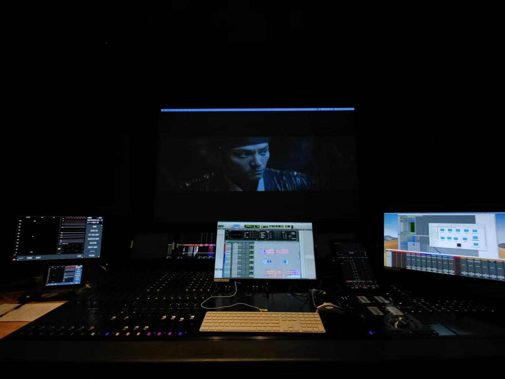

Brotherhood of Blades II The Infernal Battlefield
This is a complete sound post-production project, involving ADR (Automated Dialogue Replacement), Foley recording, editing, and mixing. Brotherhood of Blades II: The Infernal Battlefield is a Chinese historical martial arts film released in 2017, directed by Lu Yang and co-produced by eight companies, including Beijing Youth Film Studio. This project was completed collaboratively, where I served as the ADR supervisor, Foley artist, and lead editor and mixer. I declare that this work is solely for academic purposes and will not be used commercially.
The entire production took place in the sound studio at the Sound School of Beijing Film Academy, using Pro Tools as the DAW, Sennheiser 416 and Neumann U87 microphones, and the Avid S6 mixing console. The entire production took eight weeks: the first four weeks were dedicated to ADR and Foley recording, while the final four weeks focused on editing and mixing.
Recording crowd sounds - microphone placement
Mixing Studio
ADR Supervision
As the ADR supervisor, I was responsible for casting voice actors. I considered factors such as vocal tone, delivery habits, and the results of the voice tests before finalizing the main cast. During recording, in addition to operating the software, I also adjusted the actors' emotional states. A crucial point was managing the dialogue distance in the scene (not just the distance between the character and the camera but the distance between characters in conversation). This directly affects vocal delivery, such as whether the actor is speaking face-to-face or calling from a distance. This adjustment could not be made in post-production, so it had to be controlled during recording, including reminders about breathing, posture, and microphone distance. For crowd sounds, I prepared specific lines for each actor to avoid unintentional mimicking and repetition.
Foley Recording
As a Foley team member, I learned a lot during the process. The core of Foley work lies in selecting materials that authentically align with the film’s setting and character design. For example, to replicate the realism of Ming dynasty officials’ clothing, my team and I referred to historical materials and sourced props like coarse ceramic pots to smash. During the recording, I checked each detail of the action on-screen to ensure the sounds were captured fully, especially those subtle sounds in wide shots. In the Foley studio, my team and I adjusted actions while observing the visuals to ensure the sound matched the picture. This meticulous attention to detail enhanced the film's realism.
Editing and Mixing
During the editing phase, the key task was to align the recorded sounds with the picture and perform basic volume balancing. In the mixing stage, we made finer adjustments based on the shot size, altering volume levels, timbre, and reverb to suit different spaces. After processing individual clips, we used the faders to control the overall volume for each bus.
Mixing focused on layering the sound and fitting it to the film's overall rhythm. Mixing is akin to ‘subtraction,’ selectively removing less critical sounds to highlight those most essential. For example, in a scene where the focus is on dialogue in a close-up, we reduce the volume of footsteps and movement sounds from distant characters to emphasize the narrative. When a crowd of soldiers surrounds the main character, their voices need to be amplified, and the surround sound adjusted to create a heightened sense of oppression.
Images of final project in progress